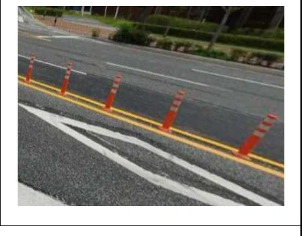

936. Giải thích nào không đúng về cơ sở an toàn đường bộ được lắp đặt tại vị trí biểu thị vạch phân cách?

- ①Phương tiện an toàn đường bộ được lắp đặt trên vạch phân cách giữa đường là dải phân cách.
- ②Lắp đặt nhằm mục đích cảnh báo là khu vực nguy hiểm có nguy cơ xảy ra tai nạn giao thông cao.
- ③Là cơ sở thu hút tầm nhìn bằng cách hỗ trợ hiển thị trên bề mặt đường để thu hút sự chú ý của người lái xe.
- ④Lắp đặt để phân luồng giao thông theo hướng đồng nhất và hướng đối diện về mặt không gian.
Xem đáp án
Đáp án
① Phương tiện an toàn đường bộ được lắp đặt trên vạch phân cách giữa đường là dải phân cách.
Căn cứ
① Cơ sở an toàn đường bộ được đề cập là cọc dẫn hướng. Hướng dẫn lắp đặt và quản lý các thiết bị an toàn đường bộ (Quy định số 318 của Bộ Đất đai, Cơ sở hạ tầng và Giao thông vận tải) - Phần 1 Thiết bị hướng dẫn bằng mắt Cột dẫn hướng bằng mắt là một thiết bị được lắp đặt ở những nơi có nguy cơ xảy ra tai nạn giao thông cao và cần sự chú ý của người lái xe để phân tách không gian các luồng giao thông cùng hướng và ngược chiều cũng như để cảnh báo các đoạn đường nguy hiểm bằng cách hỗ trợ vạch kẻ đường.
Phần căn cứ là bản dịch máy để tham khảo.